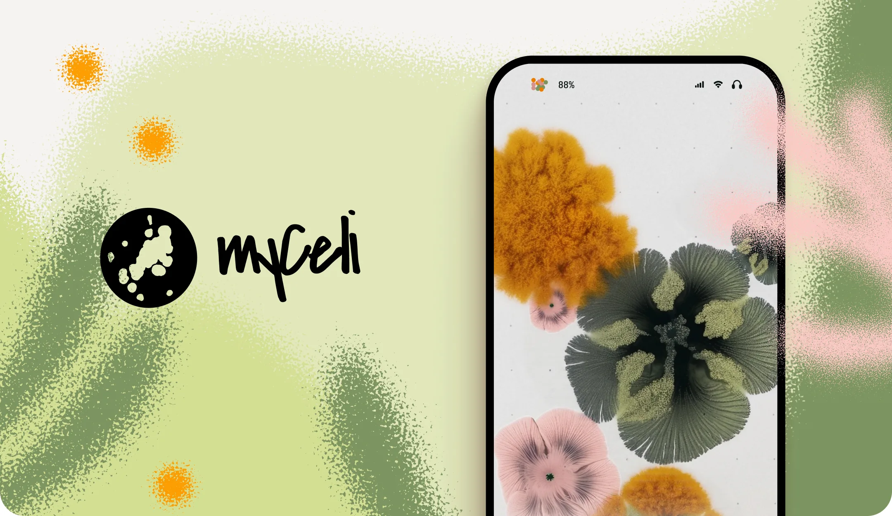
myCeli
Introduction
Мобильное приложение, которое помогает выйти из автоматизма, внимательнее проживать день и видеть связь между ежедневными состояниями и действиями
Команда из 3-хServices
Tools
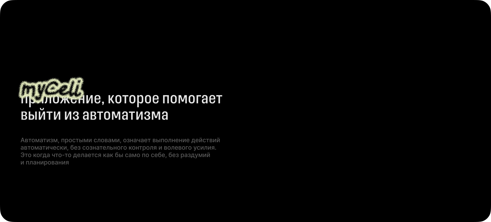
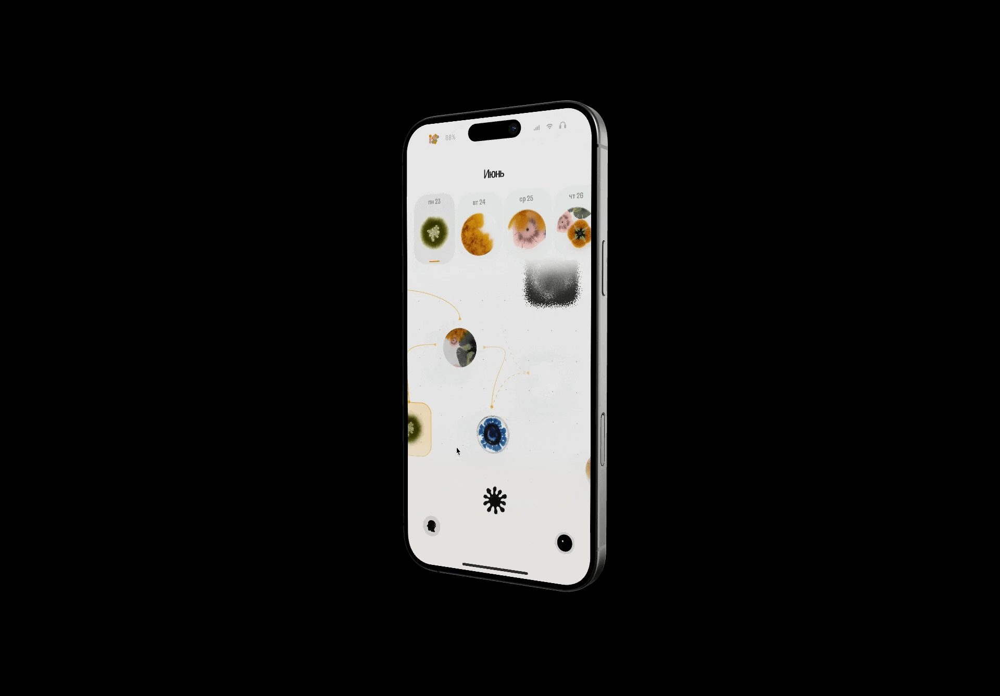
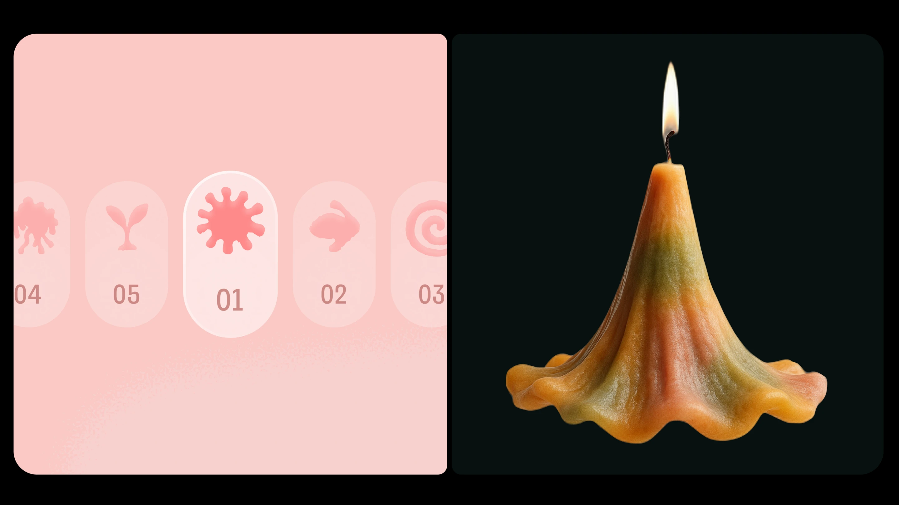
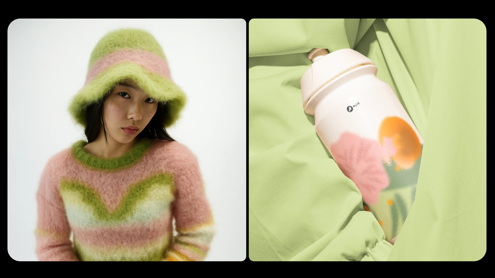
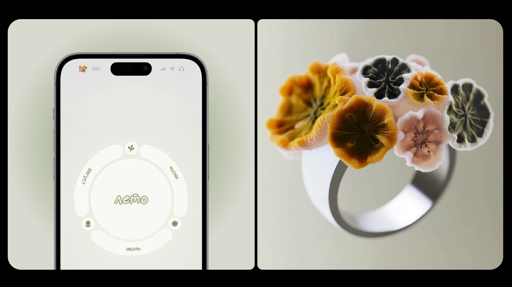
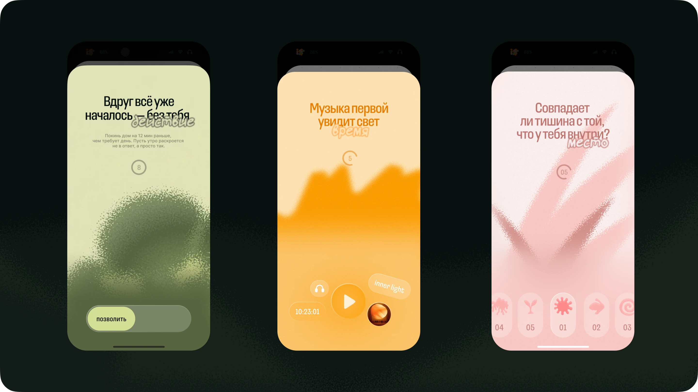
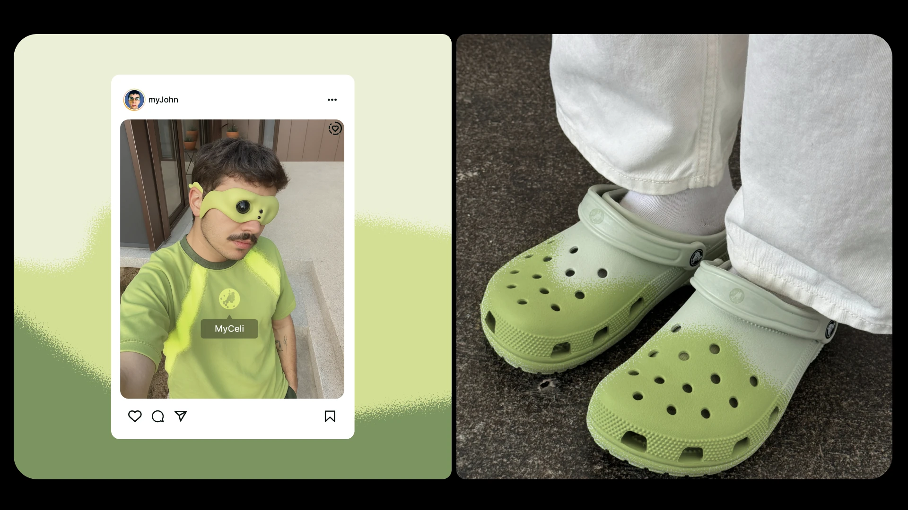
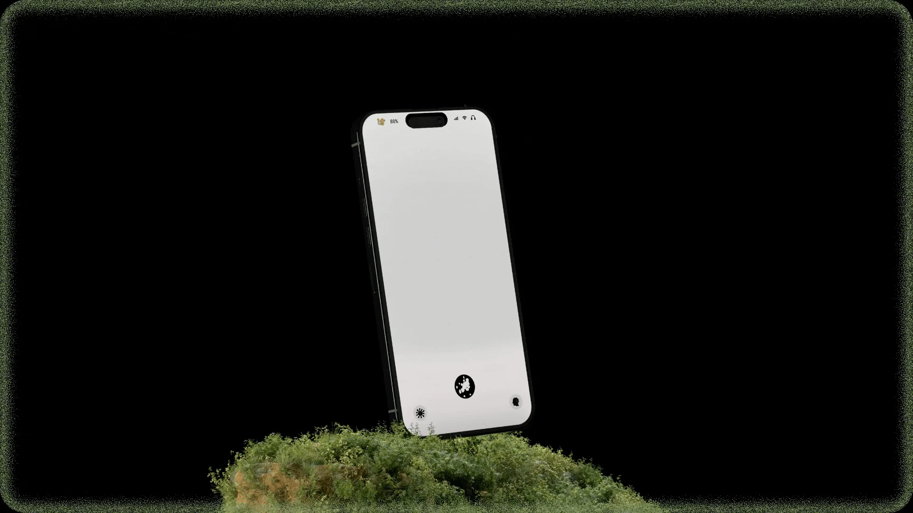
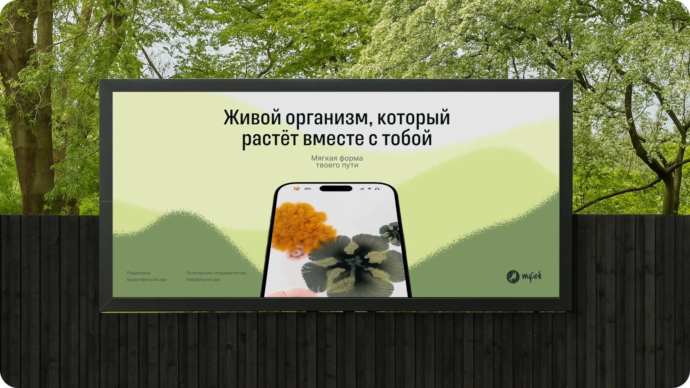
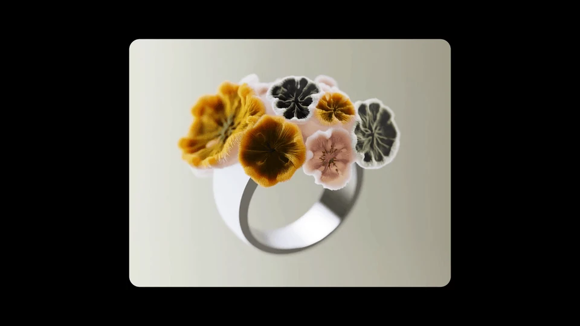